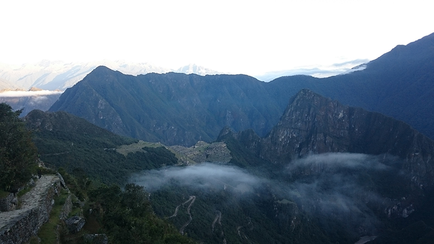
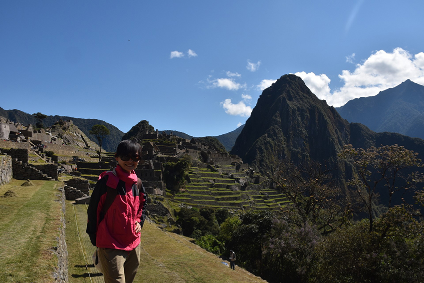

大宅女的我，假日只會爬枕頭山，但竟然在2015年完成了四天三夜印加古道，一路健行到達世界七大奇景之一的馬丘比丘。多年後的我回想起來，還是覺得不可思議。2014年，朋友們籌備著要去旅行，我這個放假就不想用腦，有人規劃我只說YES，所以就這樣懵懵懂懂，付錢、買飛機票、劃機位的事在不知不覺中就完成了。有兩種方法可以去天空之城 - 馬丘比丘；第一搭火車，第二跟著印加帝國遺跡, 沿安第斯山脈行走，全程45公里，海拔最高至4000公尺；勇於挑戰的朋友選了第二種，而這個不動腦、完全沒有做功課、不知事情大條更忘了之前去九寨溝有嚴重高山症的我就這樣踏上了不歸路。
健行是從庫斯科這座高山城市出發，其位在海拔3400公尺，我一到就有高山症狀，頭痛不已。第一天凌晨四點出發集合，六月的南美洲是冬天，高地冷咻咻的天氣，我們都包得緊緊的，因為挑夫幫我們背的行李有限制重量又加上全程四天皆不能梳洗，我們一行四個女生就有兩位為了這個健行剪了個超短男生頭，犧牲頗大啊。四天高山健行，我們只需要背著輕便的背包，其他帳篷睡袋及吃食皆有挑夫負責；餐點因國家地域文化之關係，還有因高山症及透支的體力讓我們吃的很不習慣外，在高山上這樣克難的環境都還會有熱茶及熱食，真的讓人很感動。
第一天12公里，高度達3000公尺，路途還算緩和，加上頭一天的興奮感，如果可以忘記頭痛，沿途風景加上時不時出現可愛的羊駝，這樣的健行還算愉快。但是第二天我們都苦不堪言，雖然沿途嚮導會介紹印加帝國殘存的古蹟，但這一天會經過古道至高處「Dead Woman’s Pass」4215公尺及要走完16公里。
這一天一早我們一路往上爬，高山症及稀薄的氧氣，我這個頭痛無比的人，每走一步都喘到不行，在到達休息處前都是靠意志力抬腳；最後在營地休息時，整個人感覺重生；當知道我可以堅持不落後，靠自己一步步，戰勝高山症狀及就算氧氣再少、喘不過氣，最終還是可以到達目的地，人的潛力真的是無限。第三天緩下坡，只需要完成十公里，我們一早走完，下午就在一處的古蹟聽嚮導講歷史及放鬆。這一天提早休息，是為了第四天凌晨三點就要出發，趕著在日出時通過太陽門進入馬丘比丘。
|  |
從太陽門望向遠處（陽光灑下之前）天空之城。 |
|  |
經過四天三夜體力及意志力用到極盡，我們終於到達這座美麗的天空之城。 |
這座石頭建造位於與世隔絕2400公尺高度的山上，學者稱為「失落的印加城市」，其用途還有最終為何被棄城，現今已無從考查。我們穿梭於其中，看到些許痕跡可以對現代人透露過往的故事，而我心中更多的是對這些先人及古蹟深深的讚嘆。一塊塊大小石頭，堆砌建造這座古城，很難想像好幾千年，沒有現代的機器及交通運輸工具，這石材到底是如何到達這2400公尺的高山上，而這些建材沒有現代建築工法，是怎樣堆疊成牆、穩固不動搖，先人的智慧值得我們好好學習。
我們逗留再逗留，最後不得不坐著巴士下山；山下古樸的小鎮「熱水鎮」，因人們搭火車來觀看馬丘比丘而繁榮，隨處看到不同國籍的觀光客，到處都是旅行社及餐廳；但散步其中，小鎮的角落還是保有安靜純樸的一面。我們還在一處小型足球場觀看了當地的足球賽呢。
離開北半球來到幾萬公里遠，2千多公尺高度的天空之城，它美麗卻又不孤獨，是全球人心心念念一生一世一定要去朝聖的夢想，它的身影會永遠留在我的心中。